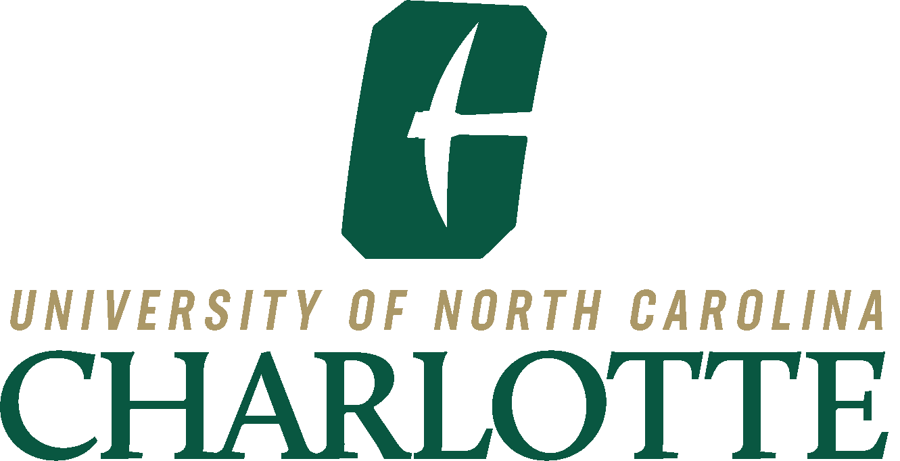

The University of North Carolina at Charlotte
Bachelor of Science in Computer Science
May 2022
Concentration: Software, Systems and Networking
GPA: 3.5/4.0
Operating Systems: Windows, MacOS, Linux, iOS, Android
Language: Fully Proficient: Java, C, C++, SQL
Proficient: Python, PBASIC, HTML, CSS
Familiar: Solidity, PHP
Software: Android SDK, Eclipse, Netbeans, Firebase, AWS,
